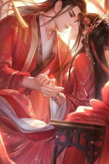

Thông tin truyện

Nàng không muốn làm hoàng hậu
Phụ mẫu Vân Kiều mất sớm, một mình nàng tự buôn bán nhỏ, còn nhặt được một thư sinh nghèo mi thanh mục tú về làm phu quân, mỗi ngày trôi qua cũng có chút thú vị.Sau này, khi phu quân nàng vào kinh đi thi, hắn bỗng nhiên trở thành Thái tử tôn quý.
Ai ai cũng đều nói Vân Kiều nàng có phúc, ấy vậy mà lại được gả cho hoàng tử lưu lạc ở dân gian. Song, Vân Kiều lại cảm thấy vô cùng hụt hẫng.
Nàng không quen với cuộc sống cẩm y ngọc thực, cũng không am hiểu cầm kỳ thi hoạ, phong hoa tuyết nguyệt, thậm chí chữ viết cũng rất xấu. Hoa phục của Trung cung mặc lên người nàng không hề giống một Hoàng Hậu.
Vân Kiều cẩn tuân lời dạy bảo của Thái hậu, học quy củ, tuân thủ lễ nghi, không sân si, không đố kị, mãi đến khi Bùi Thừa Tư tìm được bạch nguyệt quang trong lòng hắn. Cuối cùng, nàng mới hiểu, hoá ra Bùi Thừa Tư cũng có thể yêu một người đến vậy.
Ngày Bùi Thừa Tư sửa tên đổi họ cho bạch nguyệt quang đã mất phu quân kia, cho nàng ta tiến cung phong phi, Vân Kiều uống chén thuốc ph* thai làm mất đi hài tử mà chính nàng đã mong đợi.
Đối mặt với cơn giận lôi đình của Bùi Thừa Tư, nàng không màng đến vị trí Hoàng hậu, nàng muốn về lại trấn Quế Hoa.
Nàng ghét phải nhìn bầu trời nhỏ hẹp trong cung cấm, nàng muốn trở về thị trấn nhỏ, thiên hạ rộng lớn, hương thơm tỏa khắp đất trời vào cuối thu.
Nàng cũng ghét nhìn thấy Bùi Thừa Tư.
Từ đầu tới cuối, nàng chỉ yêu chàng thư sinh áo xanh phóng khoáng nọ, chỉ cần nhìn thoáng qua cũng thấy yêu thích vô cùng. Tiếc là, từ lúc hắn rời trấn vào kinh, hắn đã chết rồi.
Vai chính: Vân Kiều ┃ vai phụ: Những người còn lại.
Lập ý: Nếu ngươi vô tình vậy thì ta sẽ hưu.